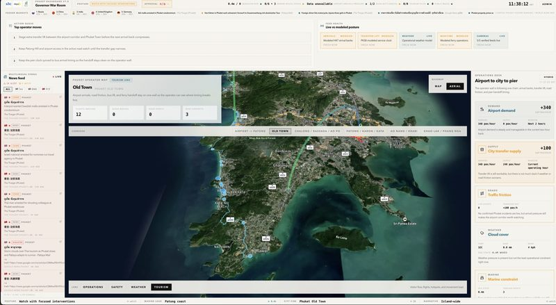

Live · Phuket
NODE_01 7.8804°N · 98.3923°E

PROD / 01 / Regional Operations
A governor's situation room, in a browser tab.
Phuket's transit, public safety, and environmental signals, unified into one surface that an actual governor can read in 30 seconds. Built in weeks, not procurement cycles.
Why it's special
Most government dashboards are read-only PDFs disguised as software. Phuket is a working operations room: transit, safety, and environment fused on one screen, refreshed every 42ms. The governor reads it directly — no analyst translation layer.
What it replaced
Three siloed agency reports, an SMS escalation chain, and a Tuesday-morning briefing slot.
Earned on day one
Built on existing IoT infrastructure — no new hardware procurement.
System architecture // NODE_01 · Phuket Operations
Inputs
IoT Sensors × 3,200
Transit GPS Feeds
Safety Alert Network
Environmental Monitor
→
Processing
Edge Aggregation
42ms refresh
Vite · Mapbox · IoT
42ms refresh
Vite · Mapbox · IoT
→
Surfaces
Governor Dashboard
War Room View
War Room View
Smart Bus App
Passenger Telemetry
Passenger Telemetry